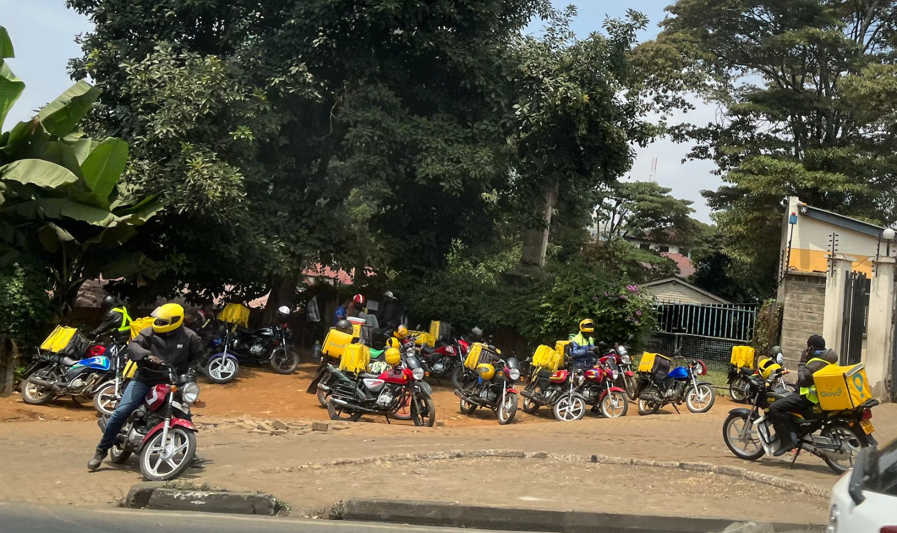

Devenir coursier
Payé à chaque course, versement chaque vendredi, assurance et équipement fournis. Nous recrutons à Kinshasa, Lubumbashi et Goma.

Pourquoi rouler avec Kimia
Un revenu clair
2 200 FC en moyenne par course en ville, grille publiée dans l'application. Bonus de 25 000 FC par semaine au-delà de 95 % de livraisons à l'heure.
Payé chaque vendredi
Versement sur M-Pesa, Orange Money ou Airtel Money. Aucun frais d'inscription, jamais.
Protégé
Casque homologué, gilet, imperméable et assurance accident fournis. Formation sécurité routière de deux jours.
Libre
Vous choisissez vos heures et vos zones. Pas de bonus de vitesse : nous payons la ponctualité, pas la prise de risque.

Ce qu'il faut
- 18 ans ou plus
- Permis de conduire catégorie A
- Carte d'électeur ou passeport
- Smartphone Android
- Moto en bon état, ou programme Kimia Moto
- Attestation de bonne vie et mœurs
Kimia Moto
Kimia Moto
Pas de moto ? Nous vous en louons une, neuve et entretenue, 45 000 FC par semaine. Après 78 semaines, elle est à vous.
Comment ça se passe
1. Candidature
Formulaire ci-dessous ou au hub de Masina. Réponse par SMS sous 48 heures.
2. Entretien
Vérification des documents, entretien et test de conduite au hub.
3. Formation
Deux jours : sécurité routière, application, service client, contre-remboursement.
4. Première tournée
Accompagné d'un chef d'équipe, puis vous roulez seul.
Autres emplois
- Coursier motoKinshasa · Opérations · Partenaire indépendant · 40 places · Clôture 31 octobre 2026
- Coursier motoLubumbashi · Opérations · Partenaire indépendant · 15 places · Clôture 31 octobre 2026
- Chauffeur utilitaire, permis BKinshasa · Opérations · CDD 12 mois · 6 postes · Clôture 9 octobre 2026
- Agent de tri de nuit, hub de MasinaKinshasa · Hub · CDI · 10 postes · Clôture 30 septembre 2026
- Responsable d'agenceGoma · Réseau · CDI · Clôture 16 octobre 2026
- Conseiller service client, français et lingalaKinshasa · Service client · CDI · 4 postes · Clôture 2 octobre 2026
- Développeur backend, APIKinshasa · Technologie · CDI · hybride · Clôture 23 octobre 2026
- Chargé de comptes entreprisesLubumbashi · Commercial · CDI · Clôture 12 octobre 2026
Postuler
Chaque candidat reçoit un SMS sous 48 heures. Nous ne demandons jamais d'argent pour un recrutement : signalez toute demande au service client.
- Charte du coursierPDF · 4 p. · 2025Télécharger